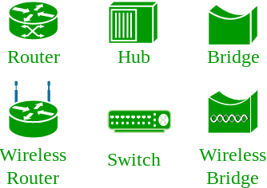
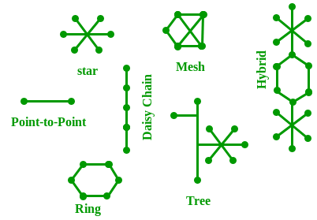
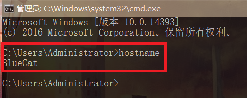
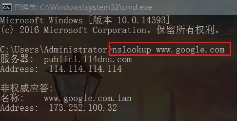

主要了解计算机网络中一些基本的概念，译自GeeksforGeeks.
基本概念
开放系统 (Open system)
连接到网络并准备好进行通信的系统。
封闭系统 (Closed system)
未连接到网络且无法与之通信的系统。
计算机网络 (Computer Network)
计算机网络是多个设备进行互连，这些设备通常称为多路径连接的主机，用于发送/接受数据。
还有许多设备和介质是用于协助不同两个不同设备之间的通信的，这些设备就是网络设备(Network devices)。例如：路由器，交换机，集线器，网桥。

使用哪些设备互连的布局模式称为网络拓扑。如:总线型(Bus), 星型(Star), 网状型(Mesh), 环形型(Ring), 以及链状型(Daisy chain)等。

OSI
OSI，即Open Systems Interconnection,开放系统互连。它是一个参考模型，指定了通信协议的标准以及每层的功能。
协议 (Protocol)
协议是一组规则或算法，它们定义了两个实体如何通过网络进行通信的方式，并且在OSI模型的每一层都存在不同的协议。例如：TCP, IP, UDP, ARP, DHCP, FTP等等。
网络的唯一标识
主机名 (Host name)
网络中的每一个设备都有与一个唯一设备名称相关联，称为主机名(Hostname)。
我们可以在命令行cmd界面中键入hostname，然后回车来查看主机名 -

IP 地址 (Internet Protocol address)
IP 地址也称为逻辑地址，是在整个网络中开放系统的网络地址。
为了识别万维网中的每个设备，Internet Assigned Numbers Authority(互联网号码分配局，IANA)将IPV4(版本4)地址分配为Internet上每个设备的唯一标识符。
IP地址的长度为: 32位(因此一共有$2^32$个ip地址可用)。在命令提示符cmd下键入ipconfig并按回车，可以查看设备的ip地址。
MAC 地址 (Media Access Control address)
MAC地址也称为物理地址，是每个主机的唯一标识符，并于NIC(Network Interface Card，网络接口卡)相关联。
网卡的生产产商在制造网卡时将MAC地址分配给NIC。MAC地址的长度为： 48位。在命令行提示符cmd中键入ipconfig /all并回车，可以查看MAC地址。
端口 (Port)
端口可以称为是逻辑信道，通过该信道可以将数据发送/接受到应用程序。任何主机都可能运行多个应用程序，并且每个应用程序都使用运行它们的端口号进行标识。
端口号是一个16 bit整数，因此一共有$2^16$(65535)个端口号可用,它们可以被分成以下几类 -
| 端口类型 | 范围 |
|---|---|
| 知名端口(Well known Ports) | $0 - 1023$ |
| 注册端口(Registered Ports) | $1024 - 49151$ |
| 临时端口(Ephemeral Ports) | $49152 - 65535$ |
在命令行中键入netstat -a可以查看目前主机正在使用的所有端口号 -

Socket
IP地址和端口号组成的唯一组合就是Socket。
一些额外概念
DNS 服务器
DNS,即Domain Name system,域名系统。DNS是将Web地址h或URL(例如： www.google.com)转换为相应的IP地址的服务器。这样我们就不必记住每个网站的所有IP地址。
命令nslookup可以查看所需域名的IP地址。同时也提供了所使用的DNS服务器的信息 -

ARP
ARP，即Address Resolution Protocol(地址解析协议)。它用于将IP地址转换为与其对应的物理地址(即MAC地址)。数据链路层使用ARP来识别接受计算机的MAC地址。
RARP
RARP,即Reverse Address Resolution Protocol(逆地址解析协议)。顾名思义，它是逆向将给定的物理地址转换为设备的IP地址。但是自从DHCP出项以来，RARP已经过时了。